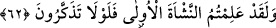

aklınıza gelmeyen yaratılmışlardan var edelim.
Hasan Basrî (rh.a.) âyet-i kerîmenin mânâsıyla ilgili şöyle demiştir: Şayet
elçilerimize inanmazsanız öncekilerin şekillerinin değiştirilip daha çirkin şekillere
sokuldukları gibi size domuzlar ve maymunlar şekline sokarız. Yâni biz, sizin yerinize
benzerlerinizi yaratmaktan ve bulunduğunuz suretten başka bir şekle getirmekten âciz
değiliz.
Âyet-i kerîmenin bir tehdid mânâsına olma ihtimali de vardır. Bu takdirde, ya
bilmedikleri bir yaratılışla yeniden meydana getirilmeleri veya bilmedikleri bir takım
niteliklerde; yâni farklı renklerde ve şekillerde yeniden yaratılmaları kasdedilmiştir.
Hadis-i şerifte şöyle buyrulur: “Cennet halkı tüyleri bitmemiş ve hiç bitmeyecek
durumda yaratılmışlardır. Cehennem halkına gelince, onların her bir dişi Uhud dağı
gibidir.”[218]
Âyet-i kerîmede, Allah Teâlânın insan sıfatlarını meleklerin sıfatlarına değiştirmekten
ve sâlikleri sâhip oldukları sıfatlardan başka sıfatlara mazhar kılmaktan âciz olmadığına
işâret vardır. Zira, sonsuz hikmetin gerektirdiği şekilde bir kimsenin sâhip olduğu
sıfatlarına zıt başka sıfatlara sâhip olması imkânsız değildir. Nitekim bir maddenin içine
iksir katıldığında onun bazen gümüş bazen de altın olduğunu görmekteyiz.
62. Andolsun, ilk yaratılışı bildiniz. Düşünüp ibret almanız gerekmez mi?
“Andolsun, ilk yaratılşı bildiniz.” Bu ilk yaratılış, onların nutfeden yâni erkek
siperminden, sonra rahim cidarına tutunmuş aşılanmış yumurtadan yaratılmaları,
ardından da bir et parçası durumuna gelmeleridir.
Bu ilk yaratılmaktan maksadın, Âdem (a.s)’ın topraktan yaratılması olduğu da
söylenmiştir.
“Düşünüp ibret almanız gerekmez mi?” Durum böyle olunca, bunlara gücü yeten
Allah’ın sonraki yaratmaya da kesinlikle muktedir olacağını düşünmez misiniz? Çünkü,
önceki örneği mevcuddur, parçaları belirli ve gerekli madde bulunduğu için çok daha az
işi vardır.
O ki bizi yokluk halvetinden
Varlık cilvegâhına çekti.
Bu defa sam rüzgârıyla helâk edip
Yüzümü toprak perdesi altında gizledi.
Hem “kün feyekûn” emriyle
Kabrin köşesinden tekrar dışarı çıkarır.